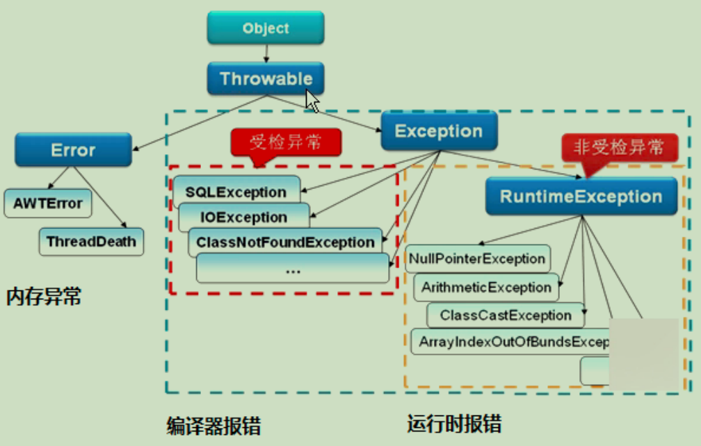

如果某个方法不能按照正常的途径完成任务，就可以通过另一种路径退出方法。在这种情况下会抛出一个封装了错误信息的对象。此时，这个方法会立刻退出同时不返回任何值。另外，调用这个方法的其他代码也无法继续执行，异常处理机制会将代码执行交给异常处理器。

异常的分类
Throwable是Java语言中所有错误或异常的超类。下一层分为Error和Exception。
Throwable的常用方法：
String getMessage() 返回此throwable的详细消息字符串；
void printStackTrace() 将此throwable及其追踪输出至标准错误流；
String toString() 返回此throwable的简短描述；
Error
Error类是指Java运行时系统的内部错误和资源耗尽错误。应用程序不会抛出该类对象。如果出现了这样的错误，除了告知用户，剩下的就是尽力使程序安全的终止，它是由Java虚拟机抛出的。
Exception（RuntimeException、CheckedException）
Exception又有两个分支，一个是运行时异常RuntimeException，一个是检查时异常CheckedException。
RuntimeException如：NullPointerException、ClassCastException；一个是检查异常CheckedException，如IO错误导致的IOException、SQLException。RuntimeException是那些可能在Java虚拟机正常运行期间抛出的异常的超类。如果出现RuntimeException，那么一定是程序员的错误。
检查异常CheckedException：一般是外部错误，这种异常都发生在编译阶段，Java编译器会强制程序去捕获此类异常，即会出现要求你把这段可能出现异常的程序进行try...catch，该类异常一般包括几个方面：
1）试图在文件尾部读取数据；
2）试图打开一个错误格式的URL；
3）试图根据给定的字符串查找class对象，而这个字符串表示的类并不存在；
异常的处理方式
抛出异常有三种形式，一是throw，一个throws，还有一种系统自动抛异常。
1）对代码块用try...catch进行异常捕获处理
单个异常的处理
1 try {
2 这里写可能出错的代码
3 } catch (Exception e) {
4 这里写可能出现的错误异常的处理
5 }finally{
6 这里写一定会执行的代码，有些资源需要关闭的时候
7 } 多个异常的处理
1 try{
2 可能出现问题的代码
3 }catch(异常类名1 对象名1){
4 //异常处理
5 }catch(异常类名2 对象名2(){
6 //异常处理
7 }
8 Jdk7以后出现另一种方式处理多个异常：
9 try {
10 String strDate = "2018-6-20" ;
11 SimpleDateFormat sdf = new SimpleDateFormat("yyyy-MM-dd HH:mm:ss") ;
12 //解析
13 Date d = sdf.parse(strDate) ;
14 System.out.println(d);
15 }catch(ParseException e) { //创建一个异常对象:PareException e = new ParseException() ;
16 //使用throwable里面的一些方法
17 String str = e.getMessage() ;
18 System.out.println(str);//Unparseable date: "2018-6-20"
19 String str = e.toString() ;//简单描述
20 System.out.println(str);//包名.类名: getMessage() ;
21 e.printStackTrace();
22 }
23 finally{
24 //里面的代码一定会被执行，除非jvm退出了
25 }
26 public static void main(String[] args) {
27 String s = "abc";
28 if(s.equals("abc")) {
29 throw new NumberFormatException();
30 } else {
31 System.out.println(s);
32 }
33 }
34 int div(int a,int b) throws Exception{
35 return a/b;
36 }2）在该代码的方法体外用throws（表示可能出现的异常）进行抛出声明，告知此方法的调用者这段代码可能会出现这些异常，你需要谨慎处理。此时有两种情况：
如果声明抛出的异常是非运行时异常，此方法的调用者必须显式地用try...catch块进行捕获或者继续向上层抛出异常。
如果声明抛出的异常是运行时异常，此方法的调用者可以选择地进行异常捕获处理。
throws也是表示抛出异常，它后面跟的异常类名，并且可以多个异常类名中间用逗号隔开；
xxx 返回值 方法名()throws 异常类名{}
例如：
public void show() throws IOException,ClassNotFoundException{...}
3）在代码块用throw手动抛出一个异常对象，此时也有两种情况：
如果抛出的异常对象是非运行时异常，此方法的调用者必须显式地用try...catch块进行捕获或者继续向上层抛出异常（使用throws）。
如果抛出的异常对象是运行时异常，此方法的调用者可以选择地进行异常捕获处理。（如果最终将异常抛给main方法，则相当于交给JVM自动处理，此时JVM会简单地打印异常信息）。
## throw和throws的区别
位置不同
1）throws用在函数上，后面跟的是异常类，可以跟多个；而throw用在函数内，后面跟的是具体的异常对象。
功能不同
2）throws用来声明异常，让调用者只知道该功能可能出现的问题，可以给出预先的处理方式；throw抛出具体的问题对象，执行到throw，功能就已经结束了，跳转到调用者，并将具体的问题对象抛给调用者。也就是说throw语句独立存在时，下面不要定义其他语句，因为执行不到。
3）throws表示出现异常的一种可能性，并不一定会发生这些异常；throw则是抛出了异常，执行throw则一定抛出了某种异常对象。
4）两者都是消极处理异常的方式，只是抛出或者可能抛出异常，但是不会由函数去处理异常，真正的处理异常由函数的上层调用处理。
throws：用来声明一个方法可能产生的所有异常，不做任何处理而是将异常上传，谁调用我我就抛给谁。
用在方法声明后面，跟的是异常类名；
可以跟多个异常类名，用逗号隔开；
表示抛出异常，由该方法的调用者来处理；
throws表示出现异常的一种可能性，并不一定会发生这些异常；
1 package com.xinkaipu.Exception;
2 class Math{
3 public int div(int i,int j) throws Exception{ int t=i/j; return t; }
4 }
5 public class ThrowsDemo {
6 public static void main(String args[]) throws Exception{ Math m=new Math(); }
7 }throw：用来抛出一个具体的异常类型
用在方法体内，跟的是异常对象名；
只能抛出一个异常对象名；
表示抛出异常，由方法体内的语句处理；
throw则是抛出了异常，执行throw则一定抛出了某种异常；
1 package com.xinkaipu.Exception;
2 public class TestThrow
3 {
4 public static void main(String[] args)
5 {
6 try
7 {
8 //调用带throws声明的方法，必须显式捕获该异常。否则，必须在main方法中再次声明抛出
9 throwChecked(-3);
10 }
11 catch (Exception e)
12 {
13 System.out.println(e.getMessage());
14 }
15 //调用抛出Runtime异常的方法既可以显式捕获该异常，也可不理会该异常
16 throwRuntime(3);
17 }
18 public static void throwChecked(int a)throws Exception
19 {
20 if (a > 0)
21 {
22 //自行抛出Exception异常。该代码必须处于try块里，或处于带throws声明的方法中
23 throw new Exception("a的值大于0，不符合要求");
24 }
25 }
26 public static void throwRuntime(int a)
27 {
28 if (a > 0)
29 {
30 //自行抛出RuntimeException异常，既可以显式捕获该异常。也可完全不理会该异常，把该异常交给该方法调用者处理
31 throw new RuntimeException("a的值大于0，不符合要求");
32 }
33 }
34 }try...catch...finally 语句执行顺序
1）finally语句总会执行。不管前面try..catch语句中是否有return，是否有异常，finally都会执行！
2）如果try...catch中有return语句，finally中没有return，那么在finally中修改除包装类型和静态变量、全局变量以外的数据都不会对try...catch中返回的变量有任何影响
3）尽量不要在finally中使用return语句，如果使用的话，会忽略try、catch中的返回语句，也会忽略try、catch中的异常，屏蔽了错误的发生
4）finally中避免再次抛出异常，一旦finally中发生异常，代码执行将会抛出finally中的异常信息，try、catch中的异常将被忽略
5）finally不能单独使用
异常中的注意事项
1）运行到try块中，如果有异常抛出，则转到catch块，catch块执行完毕后，执行finally块的代码，再执行finally块后面的代码。如果没有异常抛出，执行完try块，也要去执行finally块的代码，然后执行finally块后面的语句。
2）throw是语句抛出一个异常；throws是方法抛出一个异常；
3）throws可以单独使用，但throw不能，throw要么和try...catch...finally语句配套使用，要么与throws配套使用。但throws可以单独使用，然后再由处理异常的方法捕获。
4）如果finally有return语句，永远返回finally中的结果，避免该情况。